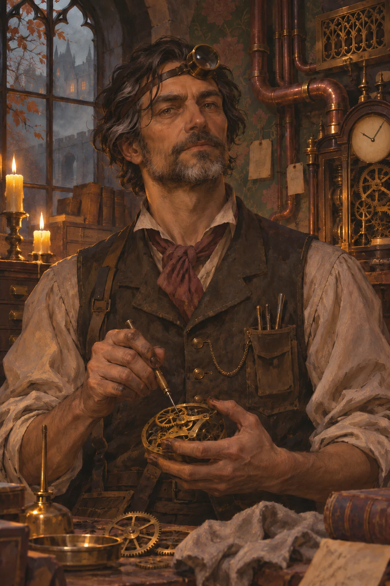

Понять, что дом говорит голосами забранных, научиться звать голос полным именем и пережить половину третьего, никого не оставив одного.
Ирина Вард

Мартин СехТадеуш РенДорота ВессЭвелина АрренБронислава КовшГаспар Урм
Если партия изменила план
Игроки раскрыли тайну раньше
Считаем тарелки до и после первого исчезновения и слушаем стену там, где кто-то отвечает. Доступные свидетельства — Тарелок на одну меньше, Тёплые обои. Недостающую тарелку убрали до удара. Голос из стены даёт основание искать пропавшего живым. Предлагаем соседу опознать голос до нового удара. Один из гостей узнаёт голос за обоями. С этого момента выбираем, кого искать в оставшиеся часы; дом больше не нужно разоблачать второй раз.
Повороты сюжета в этот вечер
Поворот: Хор — это забранные
Гул в трубах кажется голосом самого дома, а исчезнувшие в стенах — мёртвыми. На деле забранные не мертвы: они в стенах, и их голоса поют в трубах, на лестницах и под полом. Дом говорит их голосами — зовёт, приманивает и лжёт их же живыми фразами.
Из решётки в простенке звучит живая фраза первого забранного — «Сначала вещи, потом люди…» — и без вдоха: «Я здесь, за дверью. Открой». Мартин прижимает ладонь к трубе: «Это не ветер. Это трубы, и в трубах — люди». Пусть стол сам узнает голос того, кого видел живым за ужином. Если забрали другого гостя, звучит его фраза.
После него: Каждый голос в стене теперь — человек, которого знали в лицо. Отвечать ему опасно, молчать тяжело. А забранных этой ночью, оказывается, ещё можно назвать — и, может быть, вернуть.
Поворот: Правило полного имени
Кажется, что Ирина Вард — пожилая пассажирка, которая слишком много знает о свечах. На деле она была здесь тридцать один год назад, вышла одна по лестнице за часами и оставила на второй площадке брата Иоахима: она не знала, что голос надо звать полным именем. Приглашение этой осенью пришло ей его почерком.
Из решётки над порогом галереи звучит молодой весёлый голос: «Ира, ты опять вперёд?» Ирина кричит — или выдыхает: «Иоахим Вард!» Голос сбивается, и в нём проступает живой человек: «Ира, считай вслух». Под решёткой воском по штукатурке: «НЕ ОТВЕЧАЙ. ЗОВИ ПОЛНЫМ ИМЕНЕМ». Пусть стол сам выведет правило. Если Ирины нет рядом, надпись под решёткой говорит то же.
После него: Полное имя становится оружием: названный голос говорит одну правду и молчит до удара. Книга порога, таблички склепа и книжка Дороты превращаются в списки имён, которые надо помнить точно, буква в букву.
Два часа. Галерея длиннее, чем была: дверей в ней больше, и стоят они не там, где их оставили. Кухня и галерея поменялись местами, и из гостиной теперь идут через кухню, мимо тёплой печи и меловой доски, на которой хозяин пишет время. На порогах галереи старые капли воска, жёлтые и серые, как ногти. Из решёток в простенках тянет тёплым воздухом, будто дом дышит через них, и в этом воздухе — голос, который вы слышали живым час назад. Он говорит слово в слово то же самое, что говорил тогда, только не переводит дыхания и не ждёт ответа. Паркет под ногами сухой и тёплый, как пол у печи. Где-то в глубине дома часы тикают так громко, что их слышно сквозь стены. Любой огонёк здесь горит ровно, но клонится к решёткам, как к сквозняку, хотя сквозняка нет.
Подготовка и роли
Хор. До 02:00 гул на одной ноте; с 02:00 — словами, голосами забранных. Стена обращается к человеку голосом того, кого он слышал живым этой ночью (к Ирине — голосом Иоахима). Ложь: живая фраза и приманка («Я здесь, за дверью. Открой», «Погаси свечу, она жжёт мне глаза», «Иди ко мне в сад, тут тихо»). Ответ как живому — отметка «ответ Хору», ответивший первый в очереди часа. Правда: голос, названный полным именем из Книги или ниши, сбивается и говорит одну правду, потом молчит до удара; без фамилии не действует; это не ответ. Правды: Егор Нелл — «Вниз — в часах. Ступени встанут, когда пробьёт шесть»; Ирина Вард — «Свеча держит троих. Держи запасные холодными»; Дорота Весс — «Он берёт по книге, сверху вниз»; Тадеуш Рен — «Часы стоят там же, где в полночь»; Эвелина Аррен — «На половине он гасит свечи с первого в очереди»; Мартин Сех — «Ключ на верстаке — до пяти»; Бронислава Ковш — «Свечи Урмов он гасит последними»; забранный герой — «В склепе на ударе не стой». Раскрытие — три пути без броска: живая фраза (сцена 1), трубы (2), Ирина и надпись у решётки (4). Получас с 02:30 ест при 8+. Пороги в сценах: 11–13 — слуга в дверях при «шуме»; 14+ — голос выходит из стены и зовёт одного (спасбросок Мудрости Сл 12 или ответ; провал — не ответ).
Антон — метит двери галереи мелом и первым замечает новую, без метки, у решётки.
Карина Слейт (если в игре) — первой оказаться рядом с тем, кто тянется к решётке на голос, и не отпустить его руку; без Карины Илья проявляет в галерее двери, которых не было в полночь.
Божена — держит Ирину за руку, пока та зовёт брата полным именем.
Беата — держит рейку для второго плана Тадеуша и считает шаги вслух.
Сцена 1 · 35 минут
Знакомый голос
Решётка, из которой идёт голос, висит в простенке на высоте лица: латунные прутья в виде переплетённых стеблей, тёплые, как печная заслонка, а за ними одна темнота. Голос совсем близко. Он договаривает фразу и начинает её снова, с того же слова, с той же интонации, будто кто-то заучил её наизусть и боится сбиться. Дальше по галерее все двери закрыты, и медные ручки поблёскивают одинаково, как пуговицы на ливрее. Потом голос обрывает себя на полуслове. В решётке, на расстоянии ладони от вас, кто-то негромко и очень спокойно говорит: «Я здесь, за дверью. Открой».
02:00–02:12. Кухня и галерея поменялись местами: из гостиной в галерею теперь идут через кухню. На порогах старые капли воска. Из решётки в простенке — голос первого забранного, его живая фраза, которую стол слышал за ужином: «Сначала вещи, потом люди — люди сами дойдут». И без вдоха: «Я здесь, за дверью. Открой». Если голод 5+, у решётки дверь, которой не было до удара, без мела Антона. Если в 01:30 взяли не Егора, звучит живая фраза того, кого взяли. Кто слышал его живым, узнаёт голос сам, без броска: первый путь к раскрытию. Тадеуш шагами снимает новый план: «Я снял план в полночь. Сейчас он неверен в трёх местах». Выдайте раздатку «План Тадеуша, два часа». Дорота, не глядя на решётку: «Посчитайте лучше, сколько нас сейчас». Голод: «ответ Хору», если голосу отзовутся как живому; «не та дверь», если её откроют; «шум» за крик в решётку.
Выборы — и что будет дальше
Промолчать и отойти от решётки: голос повторит фразу и стихнет на одной ноте.
От решётки отходят молча. Голос повторяет живую фразу забранного ещё раз — «Сначала вещи, потом люди» — и без вдоха: «Я здесь, за дверью. Открой». Никто не открывает. Голос стихает на одной ноте. Дорота, не глядя на решётку: «Посчитайте лучше, сколько нас сейчас». Тишина держит дом на расстоянии ещё на полчаса.
Ответить голосу («Егор, ты здесь?»): отметка «ответ Хору», ответивший первый в очереди часа.
Голосу отвечают, как живому: «Егор, ты здесь?» — или зовут того, кого взяли. Голос радуется по-живому: «Здесь! Открой!» Но стена не дышит между словами. Ответивший теперь первый в очереди этого часа. Ирина хватает его за рукав: «Не отвечай. Никогда не отвечай им». Слово уже сказано, и дом его запомнил.
Открыть новую дверь у решётки: отметка «не та дверь», за ней самая дальняя от группы комната.
Новую дверь у решётки, которой не было до удара, открывают — без мела, без метки. За ней не галерея и не кухня, а самая дальняя от группы комната, и вернуться к своим оттуда можно только через весь дом. Дверь закрывается мягко, как веко. Кто вошёл, тот один. Из решётки за спиной: «Вот и хорошо. Тут тихо».
Помочь Тадеушу с обмером: Беата держит рейку, Илья проявляет лист.
Тадеушу помогают снимать новый план: рейка мастера лестниц, световой лист мастера чертежей, счёт вслух. Лист проявляет стены, какими они были в полночь. Тадеуш сравнивает и бледнеет: «Я снял план в полночь. Сейчас он неверен в трёх местах». Но одно место верно: часы стоят там же, где стояли. Это запоминают все.
Проверка и путь без броска
Проницательность Сл 12 даёт деталь: голос берёт слова, но не дышит между ними. Без броска: фраза та же, слово в слово, и её узнаёт каждый, кто слышал её живой. Если Тадеуш забран, план снимают Беата или Илья его линейкой — раздатка та же. Голод: «ответ Хору», «не та дверь», «шум» — каждая не больше раза за час.
Если не получилось
Кто ответил, того ведущий молча ставит первым в очередь на листе голода. Если голос не узнали, Дорота: «Это его слова. Он сказал их у пюпитра».
Сцена 2 · 35 минут
Трубы
Свет скользит по порогам галереи и выхватывает то, мимо чего легко пройти: капли воска у каждой двери лежат не как попало, а широким полукругом, как раз на троих. Внутри полукруга паркет почти не стёрт, а снаружи вытерт до светлого дерева множеством подошв. Капли жёлтые, с вдавленными отпечатками пальцев, и застыли так ровно, словно их отмеряли. Из глубины дома доносится гудение, ровное, на много голосов, как если бы за стеной пели, не открывая рта. В конце галереи приоткрыта дверь, за ней поблёскивает медь, и оттуда тянет часовым маслом и тёплым металлом.
02:12–02:25. По второму плану лестница наверх теперь из кухни. На каждом пороге галереи старые капли воска полукругом, полукруг ровно на троих; внутри паркет не стёрт. Ирина останавливается над воском: «Свечу держи ниже — так она дольше живёт». Мастерская: верстак, модель колеса боя, медные трубы с бирками комнат уходят в пол. Мартин прижимает ладонь к трубе с биркой «Гостиная»: «Слышите? Это не ветер. Это трубы, и в трубах — люди». В трубах дышат десятки людей на одной ноте, и сквозь гул пробивается знакомый голос забранного. Это второй путь к раскрытию, тоже без броска. Мартин кивает на латунный ключ над верстаком: «Часы не врут. Врут те, кто их заводит. Скажите, зачем вам ключ, — отдам». Голод: «разделение», если кого-то оставят у труб одного до конца сцены; «шум», если бьют по трубам.
Выборы — и что будет дальше
Взять ключ от шкафа часов: Мартин отдаёт его тому, кто скажет, зачем он нужен.
Мартину объясняют, зачем ключ, и он отдаёт его: латунный, с бородкой «VI», тёплый от трубы, у которой висел. «Часы не врут. Врут те, кто их заводит». С ключом шкаф часов откроется в шесть сразу, без потерянной минуты. Ключ, оставленный на верстаке, исчез бы вместе с мастерской на ударе пяти. Теперь он в кармане.
Спросить Мартина про шкаф: днём за маятником пустая холодная шахта и голоса снизу.
Мартина спрашивают про шкаф часов. Он вытирает масло с пальцев: «Днём я его открывал. За маятником пустая холодная шахта без ступеней. И голоса снизу. Я решил, что это ветер в трубах». Он замолкает и прижимает ладонь к трубе: «Это не ветер». Шахта за часами пуста, пока не пробьёт что-то, что её наполнит.
Оставить кого-то слушать трубы: если он один, отметка «разделение».
Кого-то оставляют слушать трубы — того, кто различает голоса. Если он останется один до конца получаса, дом это запомнит. В трубах дышат десятки людей на одной ноте, и сквозь гул пробивается знакомый голос забранного, ближе, чем за ужином. Слушающий слышит, как голос зовёт его по имени: «Иди сюда. Тут тепло». Мастерская кажется огромной и пустой.
Назвать голос в трубе полным именем забранного и услышать одну правду.
Голос в трубе называют полным именем забранного, как оно записано в Книге порога. Гул сбивается, будто кто-то споткнулся на ноте, и из трубы, против воли дома, звучит живая правда: «Вниз — в часах. Ступени встанут, когда пробьёт шесть. Не раньше». Потом голос молчит до следующего удара. Мартин медленно опускает руку с трубы.
Проверка и путь без броска
Анализ Сл 12: по биркам видно, что ниже пола все трубы сворачивают к вестибюлю, под часы. Без броска это говорит Мартин; если он забран — его голос из трубы. Анализ Сл 12 у порогов: в каждом полукруге следы трёх пар ног; без броска — Ирина: «Свеча держит троих». Голод: «разделение», «шум».
Если не получилось
Если в мастерскую не идут, Мартин говорит о трубах в сцене 4: «Все трубы — под часы. Это люди». Полукруги воска видит каждый, кто проходит галерею.
Сцена 3 · 35 минут
Половина третьего
Гул в решётках обрывается на полуноте, словно хор разом набрал воздуха, и только потом в эту пустоту из вестибюля падает удар, один, тяжёлый, от которого дрожат медные ручки дверей. Огонь, где он есть, приседает и снова выпрямляется. Где-то в доме тихо шуршит бумага, как ткань, которую тянут за край. Гаспар стоит в проёме, хотя мгновение назад там никого не было, и смотрит не на вас, а на стены, медленно, от угла к углу, будто считает их. «Половина третьего», — говорит он.
02:30. Один низкий удар; гул в решётках обрывается на полуноте. Гаспар, где бы ни стоял: «Половина третьего». Ведущий спрашивает вслух: у кого горит свеча, кто за кого держится (держатель и двое), кто в комнате один. С этого получаса дом ест при голоде 8 и выше. Очередь: кто ответил Хору, потом кто один в комнате, кто пролил кровь в этот час, потом по Книге порога. Первый, кого не защищает огонь, шагает назад в ближайшую стену; обои смыкаются над ним, как ткань, и теплеют. Его голос сразу вплетается в гул, и все это слышат. Если под огнём все, дом гасит свечи с первого по очереди, не больше предела порога, и никого не берёт. Если Эвелина или Дорота уже в стене, их фразы звучат из решётки их же голосами. Эвелина держит соседа за запястье: «Дышите со мной: раз — и два». Дорота пересчитывает: «Я считаю тех, кто вошёл. И тех, кто вышел».
Выборы — и что будет дальше
Держаться за горящую свечу: держатель и двое — рука, плечо или пояс.
За горящую свечу держатся — держатель и двое: рука, плечо, пояс. Удар половины третьего глушит гул в решётках на полуноте. Гаспар: «Половина третьего». Если голод высок, первый без огня по очереди шагает назад в стену. Держащиеся за свечу стоят. Пламя дрожит, но не гаснет. Эвелина шепчет соседу: «Дышите со мной: раз — и два».
Зажечь запасную от соседней свечи до удара, чтобы под огнём были все.
До удара запасную свечу зажигают от соседней — фитиль к фитилю, быстро. Теперь под огнём все. Если дом голоден, он никого не возьмёт, а только погасит свечи с первого по очереди. Две свечи погаснут — останутся другие. Воск капает на пальцы. Дорота пересчитывает огни: «Я считаю тех, кто вошёл. И тех, кто вышел».
Вернуть того, кто остался один у труб или у решётки, пока не пробило.
За тем, кто остался один у труб или у решётки, бегут до удара. Успевают — он под огнём, рядом. Не успевают — он один в комнате, и дом считает одиноких сразу после тех, кто ответил Хору. Тот, кого вернули, долго не может говорить: «Он звал меня по имени. Моим голосом. Моим».
Проверка и путь без броска
Броска нет: это правило. Для 6 игроков: голод 5 — ничего; 8, все под огнём — дом гасит свечу ответившего Хору (предел 1) и никого не берёт; 14, Карина ответила Хору и стоит без огня — забрана она. Свечи, погашенные на ударе, мертвы и отметку «свеча» не ставят. Забранный герой не выбывает: игрок ведёт живого гостя или говорит голосом героя в Хоре.
Если не получилось
Если стол не успел сказать, кто за кого держится, считается сказанное до удара. Никого не взяли — гул возвращается на одну ноту, Гаспар: «Две тридцать одна. Не торопитесь».
Сцена 4 · 35 минут
Имя
Тишина в галерее держится недолго. Гул в стенах редеет и расходится на отдельные нити, и одна из них выступает вперёд, ближе прочих. Она идёт из решётки над порогом, у которого воск натёк гуще всего. Штукатурка вокруг этой решётки потемнела от времени, и на ней видны неровные светлые потёки, словно когда-то по ней водили огарком. Голос молодой, весёлый, с хрипотцой, как у человека, который запыхался и смеётся на бегу. Он подбирается к самым прутьям и зовёт коротко, по-домашнему: «Ира…»
02:35–02:50, галерея. Из решётки над порогом — молодой весёлый голос: «Ира, ты опять вперёд?» Ирина замирает, трость стучит по воску: «Иоахим? Скажи, как звали нашу собаку». Голос смеётся: «Иди сюда, тут лестница». Если Ирину держат за руку, она выдыхает имя хрипло; если нет — кричит: «Иоахим Вард!» Голос сбивается, в нём проступает живой человек: «Ира, считай вслух. Кто считает ступени — не слышит нас». И молчит до удара. Под решёткой воском по штукатурке: «НЕ ОТВЕЧАЙ. ЗОВИ ПОЛНЫМ ИМЕНЕМ». Это третий путь к раскрытию и правило имени. Теперь стол может назвать первого забранного, как в Книге: «Егор Нелл» — или того, кто ушёл в стену вместо него. Правда: «Вниз — в часах. Ступени встанут, когда пробьёт шесть. Не раньше». Ирина тихо: «Он и письмо мне написал». Голод: «шум», если Ирина кричит; «ответ Хору» за отклик на «Иди сюда».
Выборы — и что будет дальше
Держать Ирину за руку, пока она зовёт брата: имя звучит хрипло, без «шума».
Ирину держат за руку, пока из решётки звучит молодой весёлый голос: «Ира, ты опять вперёд?» Она выдыхает имя хрипло, без крика: «Иоахим Вард». Голос сбивается, в нём проступает живой человек: «Ира, считай вслух. Кто считает ступени — не слышит нас». И молчит. Ирина не плачет. Она сжимает чужую руку так, что больно обоим.
Назвать первого забранного полным именем и услышать правду; каждый голос — раз в час.
Первого забранного называют полным именем, как в Книге порога. Голос сбивается и против воли дома говорит одну правду: «Вниз — в часах. Ступени встанут, когда пробьёт шесть. Не раньше». Потом молчит до удара. Каждый голос отвечает правдой раз в час. Под решёткой, воском по штукатурке: «НЕ ОТВЕЧАЙ. ЗОВИ ПОЛНЫМ ИМЕНЕМ».
Спросить Ирину о лестнице тридцать одну осень назад — она расскажет, сколько спросят.
Ирину спрашивают о лестнице. Она рассказывает столько, сколько спрашивают, не больше: шкаф в часах открылся в шесть, в нише горела высокая свеча с метками, она бежала и не считала. Брата схватило на второй площадке. «Я не знала, что надо звать по имени. Я побежала». И тише: «Он и письмо мне написал. Его почерком».
Ответить голосу «Иди сюда»: отметка «ответ Хору» и первое место в очереди.
Голос зовёт: «Иди сюда, тут лестница», — и кто-то отвечает: «Иду». Ответ записан: ответивший первый в очереди этого часа. Ирина оборачивается резко: «Не ему! Не ему отвечай!» Голос смеётся весело, по-живому. Стена не дышит. Тот, кто ответил, чувствует, как от решётки тянет теплом, будто его уже ждут.
Проверка и путь без броска
Религия или Магия Сл 12: названный голос замолкает до следующего удара — воздух у решётки холодеет. Без броска: на второй вопрос тот же голос молчит. Имя без фамилии не действует. Голос, названный полным именем, — не ответ Хору, отметки нет. Голод: «шум», «ответ Хору».
Если не получилось
Если Ирины нет рядом, Дорота обращается к решётке: «Егор Нелл, это вы?» — и голос говорит правду. Если Ирина забрана, из решётки поёт её «Свечу держи ниже», а из труб — «Ира…».
Сцена 5 · 35 минут
Третий удар
Паркет посреди галереи выложен ровным квадратом, и ёлочка в нём идёт в другую сторону, чем на всём остальном полу; по краю квадрата темнеет тонкий шов, забитый старой пылью. Решётки в простенках молчат, но из них всё ещё тянет теплом. Тиканье слышно так ясно, будто большие часы стоят прямо за стеной, в двух шагах. Гаспар идёт по галерее неторопливо, от двери к двери, и у каждой на миг задерживается, словно сверяет её с чем-то, что знает только он. «Без трёх минут три», — говорит он, не оборачиваясь.
03:00. Часы бьют три, и в галерее слышен каждый удар, будто часы стоят за стеной. Гаспар: «Три. Гости в доме». Ведущий складывает вслух: бой часов +1, каждая отметка часа +1, бой +2, тишина, приманка и круг по −1; меньше +1 не бывает. Осторожный стол: «Бой — один, тишина — минус один, круг — минус один: плюс один, теперь шесть». Средний: бой, ответ Хору, приманка — плюс один, девять. Шумный: бой, ответ Хору, шум, не та дверь, свеча — плюс пять, девятнадцать. Ход часа: паркет посреди галереи расходится квадратом, под ним каменные ступени вниз, оттуда холод и ровный свет огарков. Порог: при 5–7 новая дверь в комнате, где больше людей; при 8–10 гаснет одна свеча с первого по очереди, 11–13 — две, 14+ — три. Дорота у края люка: «Я считаю тех, кто вошёл. И тех, кто вышел».
Выборы — и что будет дальше
Собрать всех живых в одной комнате к удару и держать три свечи в руках: круг, −1.
К удару трёх всех живых собирают в одной комнате, три свечи в руках. Часы бьют, и в галерее слышен каждый удар, будто часы стоят за стеной. Гаспар: «Три. Гости в доме». Круг сдерживает голод. Паркет посреди галереи расходится квадратом, под ним каменные ступени вниз и холодный ровный свет огарков. Дорота встаёт у края первой.
Бросить в щель плинтуса вещь: приманка −1, вещь героя из его снаряжения −2.
В щель плинтуса бросают вещь — и голод дома растёт меньше; если это вещь героя из собственного снаряжения, ещё меньше. Щель смыкается, как губы. Часы бьют три. Из люка посреди галереи тянет холодом погреба. Тадеуш шепчет: «Он открыл ещё одну комнату. Вниз». Внизу поют на одну ноту больше голосов, чем час назад.
Заглянуть в люк сверху, не спускаясь, и посчитать ступени вслух.
В люк заглядывают сверху, не спускаясь, и считают ступени вслух: одна, две, три… двенадцать. Внизу ровный свет огарков, который не дрожит от сквозняка, и ниши в стенах. Счёт вслух — не шум, и Хор, кажется, его не слышит. Ирина повторяет слова брата: «Кто считает ступени — не слышит нас». Со ступеней сыплется сухая известь.
Проверка и путь без броска
Броска нет. Новое число голода пишут на лист; оно держится до 04:00. Круг засчитывается, если на ударе все живые в одной комнате и в ней горят не меньше трёх свечей в руках. Свечи, погашенные порогом, мертвы. Хор поёт громче: голосов на одну ноту больше.
Если не получилось
Если стол забыл отметки, ведущий читает галочки строки 02→03 с листа и спрашивает только, кто где стоял на ударе. Спор не задерживает удар.
Надпись у решётки
Под вентиляционной решёткой галереи по штукатурке воском выведено крупными буквами: «НЕ ОТВЕЧАЙ. ЗОВИ ПОЛНЫМ ИМЕНЕМ». Буквы неровные, воск натёк каплями, будто писали огарком на весу, при плохом свете. Штукатурка вокруг надписи потемнела от времени, а воск — нет.
Что можно установить
Голос из стены, названный полным именем забранного, как оно записано в Книге порога или в склепе, сбивается и против воли дома говорит одну правду, потом молчит до следующего удара. Ответ голосу как живому — приманка: ответивший первый в очереди часа. Имя без фамилии не действует.
Получение
Осмотреть решётку в вечере 3, сцена 4; проверка не нужна. Ирина кричит «Иоахим Вард!», и голос брата отвечает правдой: «Ира, считай вслух. Кто считает ступени — не слышит нас».
Запасной путь
Если Ирины нет или она забрана, Дорота обращается к голосу: «Егор Нелл, это вы?» — и голос говорит правду своей строки (или строки того, кто забран первым).
Трубы под часы
По стене мастерской идут медные трубы с бирками комнат, по одной из каждой комнаты, и уходят в пол. Бирки латунные, надписи выбиты аккуратно, трубы тёплые, как живая рука. Если приложить ухо, в каждой слышно дыхание многих людей.
Что можно установить
Хор поёт по трубам: в них голоса забранных. Ниже пола все трубы сходятся в шахту за шкафом больших часов вестибюля.
Получение
Мартин даёт приложить ухо в вечере 3, сцена 2: «Это не ветер. Это люди». Проверка не нужна; Анализ Сл 12 даёт деталь: ниже пола все трубы сворачивают к вестибюлю.
Запасной путь
Если Мартин забран, его голос говорит из трубы его же фразой. Если в мастерскую не идут, Мартин рассказывает о трубах за столом в сцене 4 вечера 3.
Воск на порогах
На порогах галереи старые капли воска застыли полукругом. Полукруг широкий, ровно на троих. Внутри него паркет не стёрт. Воск жёлтый, с отпечатками пальцев, будто его ставили, стоя на коленях, а капли лежат так ровно, словно их отмеряли.
Что можно установить
Огонь в руке защищает от дома: здесь стояли люди со свечой и пережили удар. Одна свеча — на троих: держатель и двое, кто держится за него.
Получение
Осмотреть пороги по дороге в мастерскую в вечере 3, сцена 2; проверка не нужна. Анализ Сл 12 даёт деталь: в каждом полукруге следы трёх пар ног.
Запасной путь
В бою «Первая трапеза» все видят, что голоса из стены сперва тушат свечи. Ирина, если её спросить про свечи: «Свеча держит троих».
Изменения после решений
Если Кто-то ответил Хору до 02:30, и голод на листе 8 или больше. → На получасе дом гасит его свечу первой. Если его забрали, с 03:00 стена поёт его живую фразу, и голос можно звать по полному имени.
Если Стол назвал первого забранного полным именем и услышал правду. → Стол знает, что спуск — в часах и встанет в шесть; в вечере 4 он ищет в склепе имя Гаспара. Этот голос молчит до 03:00.
Если Ключ от шкафа часов взят у Мартина. → Шкаф можно открыть раньше (за ним пустая шахта), а в шесть он откроется сразу. Ключ, оставленный на верстаке, исчезнет с мастерской на ударе 05:00.
Выдать в нужный момент
План Тадеуша, два часа — Вечер 3, сцена 1: Тадеуш снимает второй план после удара 02:00. Если Тадеуш забран, лист снимает Беата или Илья его линейкой — текст тот же, пометка на полях их рукой.
Завершение вечера
Три часа. Посреди паркета галереи, там, где только что лежал узор, открывается квадратный люк, и из него тянет холодом, как из погреба зимой. Снизу поют на одну ноту больше голосов, чем час назад. Среди них — тот, кого вы видели живым за ужином. Остановите игру на этом кадре и запишите новый голод. Отметьте, кто стоит ближе всех к краю и чья рука в чьей руке: следующий вечер начнётся с этого шага. Последнее перед паузой — шорох внизу: со ступеней сыплется сухая известь, будто по ним только что кто-то прошёл.